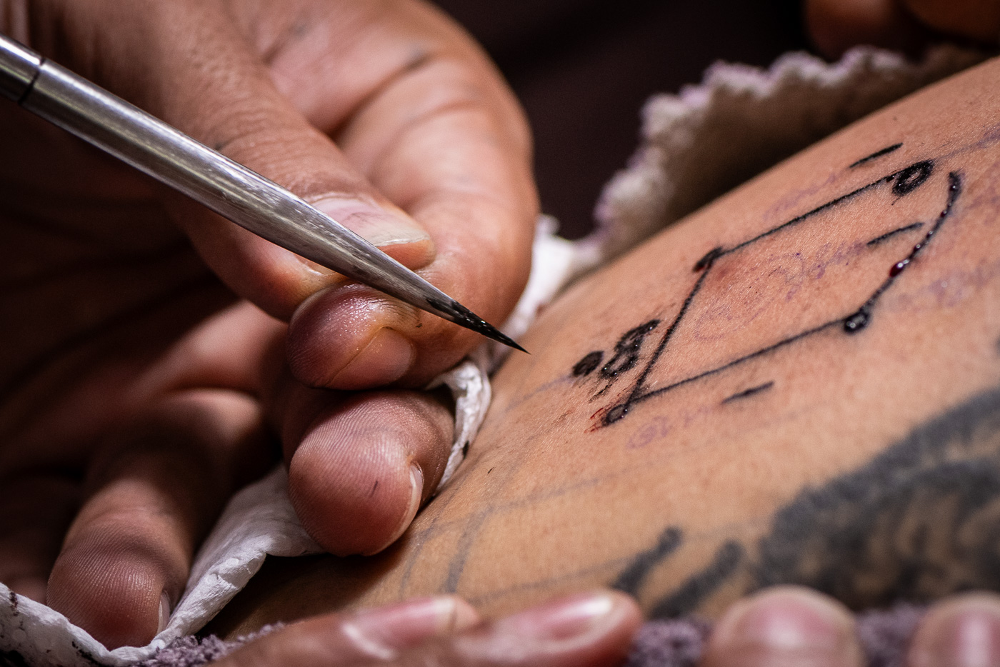
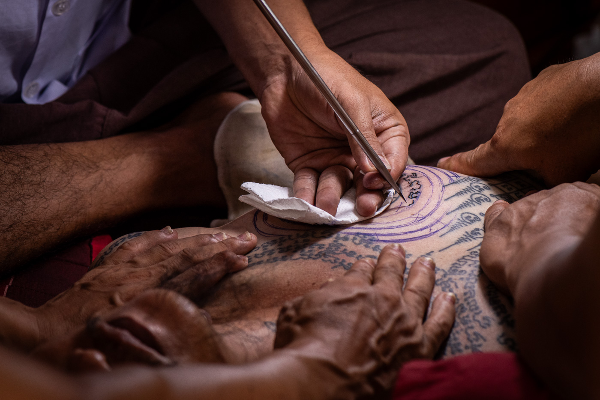
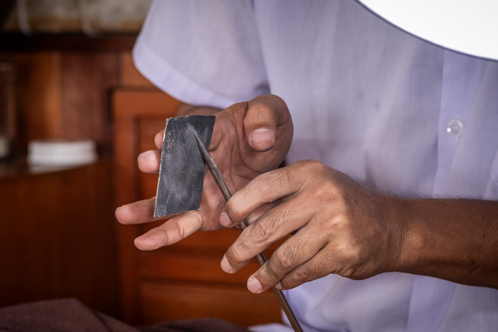
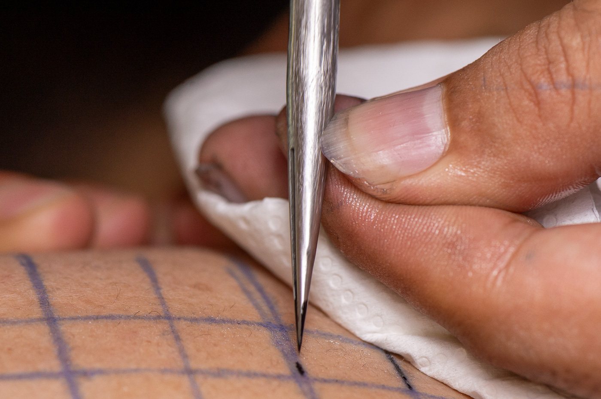
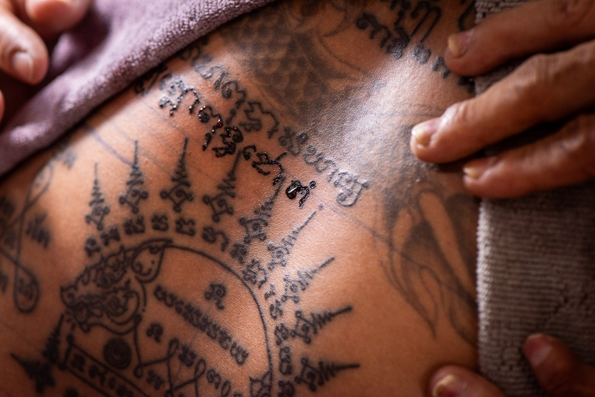
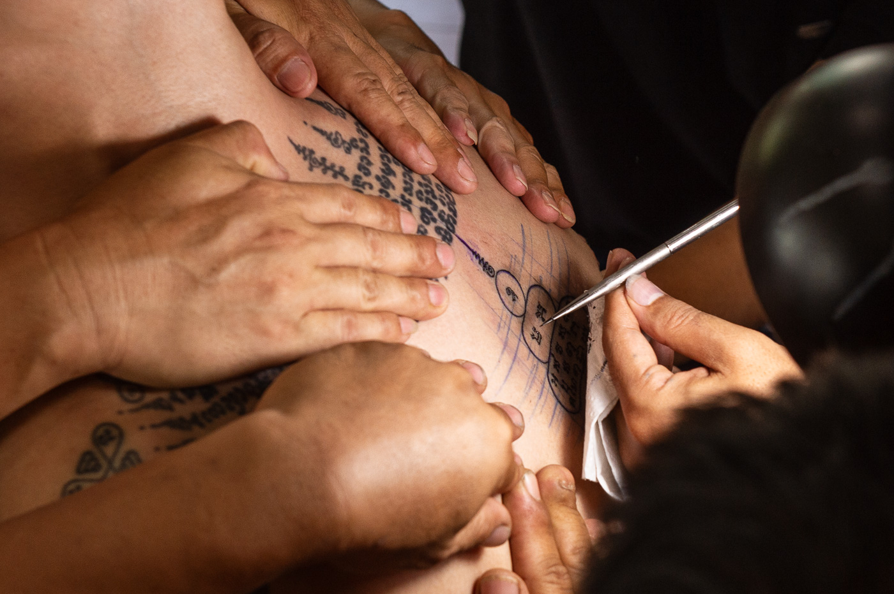

Where this comes from
The exact origins of Sak Yant are not fully agreed upon. Historians generally place the practice around the third century, when yantra geometry arrived in what is now Cambodia, Thailand, and Myanmar from Hindu and tantric practice across South Asia. The tradition draws from Hindu geometry, Buddhist Pali scripture, and older animist practice. The tattooing of these designs onto the body, rather than wearing or displaying them, is specific to mainland Southeast Asia.
A note on pronunciation: Thai people say it closer to "suk-yun." The t at the end of Yant is silent. It appears in the romanization because it exists in the Thai spelling.
The tradition moved into the Ayutthaya Kingdom and merged with Theravada Buddhism, animist practice, and a warrior culture that used these inscriptions as functional protection. By the time of King Naresuan in the late 1500s, soldiers went into battle wearing shirts covered in yantra designs. The tattoos were not decorative. They were tools.
For most of the tradition's history in Thailand, the people who had them reflected that. Warriors, fighters, Muay Thai boxers, gang members, people in dangerous occupations. Sak Yant carried a social stigma inside Thailand that most outsiders do not know about. Middle-class Thai people largely avoided them.
What changed that was a specific master and a specific moment. Ajarn Noo Kanpai, one of the most respected practitioners of the modern era, deliberately created new designs intended to broaden the tradition's appeal. On April 23, 2003, he tattooed Angelina Jolie, and the image went around the world. Thai people who would not previously have considered these tattoos began getting them. The tradition opened up in both directions.
The designs that became globally recognizable through that moment are the ones you will find everywhere now. At least one of the most common, the Ha Taew, was created by Ajarn Noo himself. The designs that predate that market are less visible, held by a smaller number of practitioners who continue working from older lineages.

Sak Yant and Buddhism
Sak Yant sits inside Thai occult tradition, ไสยศาสตร์ (sai-ya-sat). That does not mean it is separate from Buddhism. All of the Ajarns are Buddhist. Most of the people who get these tattoos are Buddhist. The chanting is drawn from Buddhist scripture. There are Buddhist elements in many of the designs. But the purpose of the tattoos, to bring the wearer protection, money, power, love, luck in travel, charm in speech, goes beyond what Buddhism alone teaches. Buddhism teaches letting go of those things. The tattoos exist specifically to get them. Thai people live with both of these things at the same time without contradiction. It is worth understanding that when you arrive.
Each yantra is a specific inscription with a specific purpose. The Ajarn who applies it is a practitioner, not an artist in the contemporary sense. The design is not chosen for aesthetic reasons. The kata, the sacred chant performed during and after the tattooing, is what activates it.

What the writing actually is
The script inside every Sak Yant design is not Thai. It is Khom, descended from the writing system of the old Khmer Empire, used today exclusively in sacred and occult practice across Cambodia and Thailand. A regular tattoo artist cannot read it. A practitioner who does not know the script cannot render it correctly, and an incorrectly rendered yantra is not an activated one.
The designs themselves are yantra, a pan-South and Southeast Asian system for containing sacred syllables within geometric forms. The geometry is not decorative. The placement of each element within the composition is determined by the system, not by the practitioner's aesthetic preferences.
The script is the tattoo. The geometry contains it. The chant activates it. These are three distinct things and all three are required.

How it is applied
Sak Yant is applied by hand using a metal rod with a needle tip. There is no electric equipment. The Ajarn controls the depth and spacing of each mark manually, working from memory through designs that may contain hundreds of individual characters of sacred script.
The offering plate is prepared before the session and presented to the Ajarn. The blessing is performed after the tattooing is complete. The Ajarn chants the kata associated with the design to activate it.
There are two needle types in common use. The distinction is worth knowing.
Split-mouth needle. The older type. A single needle with a split tip on a hand rod. Traditional form, increasingly rare among practicing Ajarns today.
Flat cluster needle. Multiple needles bound together. Still hand-applied, but a more recent configuration. More commonly encountered across the mainstream market.

What people come for
Every Ajarn has designs they are known for and designs they decline to give. The consultation determines what is appropriate for you. These are some of the most commonly requested forms.
Five rows. Each carries a distinct function: protection, elevated fortune, defense against malevolent forces, luck in commerce, and personal magnetism. The most common first tattoo.
Nine peaks. Usually placed at the base of the skull or across the upper back. Represents the nine qualities of the Buddha. One of the most structurally complex yantra forms.
Eight directions. Protection across all eight compass points. Associated with safe travel and protection from danger encountered away from home.
Tiger. Authority, strength, and the command of others. Worn by soldiers, fighters, and those in leadership. Among the most powerful and most requested figurative forms.
Golden-tongued myna bird. Persuasive speech and charm in negotiation. Used by traders, speakers, and those for whom personal influence matters.
Wealth protection. Continuous flow of money and good fortune in business. Among the most requested designs by people entering new ventures or seeking financial stability.

What the Ajarn expects of you
The Ajarn selects. In traditional practice, the Ajarn determines or confirms the appropriate design based on a consultation with you. You can express what you want. You should also be prepared to receive what you need. A good Ajarn will tell you the difference.
Rules come with the tattoo. Every yantra has prohibitions attached to it. Certain foods, certain behaviors, certain situations. The Ajarn will explain them. Following them is understood to be part of the arrangement.
Placement matters. The body has a hierarchy. More sacred designs go higher. Nothing goes below the waist. This is not aesthetics. It is part of the structure of the tradition.
This is a working space. You will be in a samnak where people come for reasons that have nothing to do with your visit. The protocol matters. Showing up without preparation wastes the Ajarn's time and disrespects the people who are there for their own purposes.

Go deeper before you decide anything
These two videos cover the tradition more thoroughly than any summary. Watching them first means any conversation we have can go further faster.
The tradition: origins, practice, and what it means
A comprehensive overview covering the history, the role of the Ajarn, the ceremony, and what the tattoos are actually for.
Video by Stories in History. Used with appreciation.
The script: what the writing in every yantra actually is
The letters inscribed in every Sak Yant design are not Thai. They are Khom, an older script with Khmer origins used for sacred writing. Once you can see them, you see them everywhere.
Video by Stuart Jay Raj. Used with appreciation.
